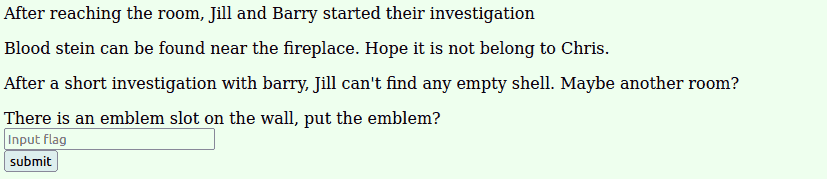

THM: Biohazard
Table of Contents
Introduction
This was an interesting room. It actually simulated an escape room in the first part, collecting keys to use again in the future and combining clues to pivot. I am not sure of the applications it may have in the real world, since it heavily relied on tedious encoding/decoding and only the steganography part was relatively challenging (mainly because I did not have a clear gameplan for that I suppose).
I liked it, though. It was fun
Reconnaissance
First things first, edit /etc/hosts, to be able to use a more
memorable address for the target machine: I used biohazard.thm, as you
will see in the rest of the room.
Port enumeration
IP=biohazard.thm nmap -sV -sC -oN nmap.initial $IP
Which gives us the following:
[ ]ftp server[ ]ssh server[ ]http server
I, then started the good ol’ full scan to see whether I missed anything and went on to the web server, hoping to find anything there.
The Mansion (Web Analysis)
Checking the web server, both manually and with our unique set of tools. The first flag, actually exists right there in the homepage.
Mansion Main
Simply moving in the website we get to /mansionMain, where a hint also
reveals /diningRoom
Dining Room
There, we get an emblem (flag), and a hint:
Furthermore, a strange input flag box appears, but it appears like nothing happens when we fill in the flag.

Figure 1: Input flag box
Tea Room
Simply reveals the lock pick flag and directs us to the /artRoom
Art Room
Gives us the map of the house:
Location: /diningRoom/ /teaRoom/ /artRoom/ /barRoom/ /diningRoom2F/ /tigerStatusRoom/ /galleryRoom/ /studyRoom/ /armorRoom/ /attic/
After seeing that, I started checking each of those rooms I had not checked before.
Bar Room
Using the lockpicking flag there, we reveal a hidden subroom
http://biohazard.thm/barRoom357162e3db904857963e6e0b64b96ba7/
We get a music note - but the string is not something that actually points me anywhere. I’m thinking of a simple encoding function:
Look like a music note NV2XG2LDL5ZWQZLFOR5TGNRSMQ3TEZDFMFTDMNLGGVRGIYZWGNSGCZLDMU3GCMLGGY3TMZL5
Maybe moonlight somata actually is a key! (Post-Completion: It was not.)
After trial and error it just happened that I discovered it was base32 (tested most of the available options manually :( )
At the gold emblem,using our older emblem flag:
rebecca
After that I went back to diningRoom to use the gold emblem flag there
klfvg ks r wimgnd biz mpuiui ulg fiemok tqod. Xii jvmc tbkg ks tempgf tyi_hvgct_jljinf_kvc
Which is obviously a substitution algorithm, since it resembles an actual sentence (Post-completion: Obviously…):
- crossed out ROTXX algorithms
- crossed out pretty much every encoding algorithm
Started experimenting with everything on Cyberchef, and when stuck, after seeing that rebecca was not a flag on thm, started using it as a key! Interestingly, it was encrypted with the Vigenere Cipher
there is a shield key inside the dining room. The html page is called the_great_shield_key
Dining Room 2F
This time I was lucky enough with Rot13:
Lbh trg gur oyhr trz ol chfuvat gur fgnghf gb gur ybjre sybbe. Gur trz vf ba gur qvavatEbbz svefg sybbe. Ivfvg fnccuver.ugzy You get the blue gem by pushing the status to the lower floor. The gem is on the diningRoom first floor. Visit sth.html
After going there, the blue gem flag is revealed.
Tiger Status Room
I was expecting this to give us something with the bluegem flag, however nothing happened… at least not the first time. I was so sure that this was the right place to use the bluegem flag, so I checked closer what I had just pasted there, and sure enough, there was a space following, which ruined it for me. After removing it, everything was working as expected, giving me:
crest 1: S0pXRkVVS0pKQkxIVVdTWUpFM0VTUlk9 Hint 1: Crest 1 has been encoded twice Hint 2: Crest 1 contanis 14 letters Note: You need to collect all 4 crests, combine and decode to reavel another path The combination should be crest 1 + crest 2 + crest 3 + crest 4. Also, the combination is a type of encoded base and you need to decode it
Gallery Room
Strangely named Gallerty:
crest 2: GVFWK5KHK5WTGTCILE4DKY3DNN4GQQRTM5AVCTKE Hint 1: Crest 2 has been encoded twice Hint 2: Crest 2 contanis 18 letters Note: You need to collect all 4 crests, combine and decode to reavel another path The combination should be crest 1 + crest 2 + crest 3 + crest 4. Also, the combination is a type of encoded base and you need to decode it
Study Room
The study room entrance seems to need a flag to unlock:
- Helmet symbol on the door (?)
I am not even sure I completed this.
Armor room
The armor room entrance seems to need a flag to unlock:
- Shield symbol on the door, so we use the shield flag
crest 3: MDAxMTAxMTAgMDAxMTAwMTEgMDAxMDAwMDAgMDAxMTAwMTEgMDAxMTAwMTEgMDAxMDAwMDAgMDAxMTAxMDAgMDExMDAxMDAgMDAxMDAwMDAgMDAxMTAwMTEgMDAxMTAxMTAgMDAxMDAwMDAgMDAxMTAxMDAgMDAxMTEwMDEgMDAxMDAwMDAgMDAxMTAxMDAgMDAxMTEwMDAgMDAxMDAwMDAgMDAxMTAxMTAgMDExMDAwMTEgMDAxMDAwMDAgMDAxMTAxMTEgMDAxMTAxMTAgMDAxMDAwMDAgMDAxMTAxMTAgMDAxMTAxMDAgMDAxMDAwMDAgMDAxMTAxMDEgMDAxMTAxMTAgMDAxMDAwMDAgMDAxMTAwMTEgMDAxMTEwMDEgMDAxMDAwMDAgMDAxMTAxMTAgMDExMDAwMDEgMDAxMDAwMDAgMDAxMTAxMDEgMDAxMTEwMDEgMDAxMDAwMDAgMDAxMTAxMDEgMDAxMTAxMTEgMDAxMDAwMDAgMDAxMTAwMTEgMDAxMTAxMDEgMDAxMDAwMDAgMDAxMTAwMTEgMDAxMTAwMDAgMDAxMDAwMDAgMDAxMTAxMDEgMDAxMTEwMDAgMDAxMDAwMDAgMDAxMTAwMTEgMDAxMTAwMTAgMDAxMDAwMDAgMDAxMTAxMTAgMDAxMTEwMDA= Hint 1: Crest 3 has been encoded three times Hint 2: Crest 3 contanis 19 letters Note: You need to collect all 4 crests, combine and decode to reavel another path The combination should be crest 1 + crest 2 + crest 3 + crest 4. Also, the combination is a type of encoded base and you need to decode it
Attic entrance
The attic room entrance seems to need a flag to unlock:
- Shield symbol on the door makes us use the shield flag
crest 4: gSUERauVpvKzRpyPpuYz66JDmRTbJubaoArM6CAQsnVwte6zF9J4GGYyun3k5qM9ma4s Hint 1: Crest 2 has been encoded twice Hint 2: Crest 2 contanis 17 characters Note: You need to collect all 4 crests, combine and decode to reavel another path The combination should be crest 1 + crest 2 + crest 3 + crest 4. Also, the combination is a type of encoded base and you need to decode it
The Crest
Having collected all 4 crests, it was obviously time for me to start experimenting with decoding them.
Crest 1
I first tried base64, and the output seemed not-so-off, ending in =. For the second encoding, I thought it could be base64 again, but the output was off (17 chars in length). Then I tried, base32 and it produced a string of length 14:
RlRQIHVzZXI6IG
Crest 2
Base32 (having it on my mind since the first time I encountered it in this room), and then base58 (suggested by CyberChef… if one just uses the right tools :P)
h1bnRlciwgRlRQIHBh
Crest 3
Base64, binary and hex gives us:
c3M6IHlvdV9jYW50X2h
Crest 4
Base58 and hex (once again, the second being suggested by CyberChef instantly):
pZGVfZm9yZXZlcg==
The complete crest
RlRQIHVzZXI6IGh1bnRlciwgRlRQIHBhc3M6IHlvdV9jYW50X2hpZGVfZm9yZXZlcg==
Simply decoding with base64 (== giving a solid clue :P) gives us the username and password for the ftp server
FTP user: hunter, FTP pass: you_cant_hide_forever
The Guard House (FTP)
At this point, I logged in, and got all of the readily available files on my machine to check them:
- 3 jpg files named 00X-key.jpg
- A gpg encrypted file
- A file called important.txt
Important.txt
Reveals to us:
/hidden_closetpage, but with a lock (helmet lock again)- That the helmet flag will be inside of the gpg file (no sh** sherlock!)
The JPG files
Using strings, we can see that, at least for key-003, there is a .txt embedded in the picture.
After taking a closer look with steghide, all of these contain
information, and all of them are password encrypted!
Key 01:
No password, just pressed enter and it worked, got the data:P
root@ip-10-10-86-188:~# steghide extract -sf 001-key.jpg
Key 02:
Had a comment 5fYmVfZGVzdHJveV9, revealed using exiftool, but was not
the key to extract.
(Post-completion: The key was not necessary after all, only the comment was enough.)
Key 03:
Exiftool revealed a comment: “compressed with jpeg-recompress”, but
after searching a little bit about it, provided no actual info. Using
just another tool did the job, this time with binwalk:
3aXRoX3Zqb2x0
Combining them together and decoding them with base64:
plant42_can_be_destroy_with_vjolt
Using this to decrypt our gpg encrypted text, and I no longer need to
run john (or stegcracker, because I surely could not have started both
of them on key2 and 3 respectively )on the background. (Yup, I thought
it might be worth a shot, since I could not find my steganography
notes at the beginning. )
Going Back
Hidden Closet
After using the helmet password, we get to another room:
- talk of a traitor
wpbwbxr wpkzg pltwnhro, txrks_xfqsxrd_bvv_fy_rvmexa_ajk- SSH password:
sorry for obfuscating this
Study Room
- SSH user: umbrellaguest
SSH
Logging in, there does not seem to be a lot we can do right away:
umbrella_guest@umbrella_corp:~$ cat /etc/passwd | grep /bin/bash root:x:0:0:root:/root:/bin/bash weasker:x:1000:1000:Biohazard,,,:/home/weasker:/bin/bash umbrella_guest:x:1001:1001:umbrella,1,0,0,0:/home/umbrella_guest:/bin/bash hunter:x:1002:1002:hunter,1,1,1,1:/home/hunter/FTP:/bin/bash umbrella_guest@umbrella_corp:~$
- I can also login as hunter with the ftp password we found above.
- Neither account is part of sudoers, no luck with sudo for us
- Found a file (chris.txt) hidden in the home directory (ALWAYS
REMEMBER TO LS -A)
- Contains the key to the string we found in the Hidden Closet, using Vigenere once again:
wpbwbxr wpkzg pltwnhro, txrks_xfqsxrd_bvv_fy_rvmexa_ajk weasker login password sadly obfuscating this as well
Weasker
Not only a sudo member, but can run everything without a password. We
got root. (It was almost unnecessary, but I ran sudo su, to avoid
using sudo on every command)